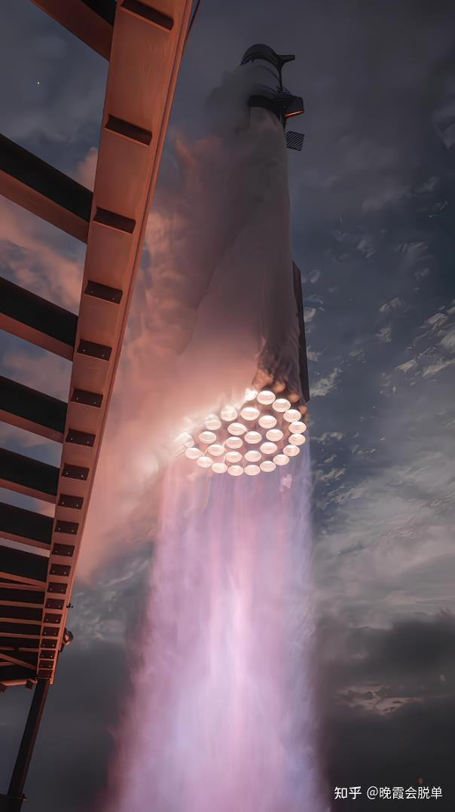
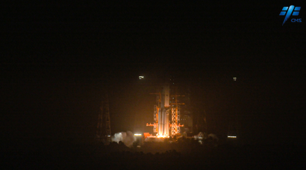

我的网页作业
welcome to my website
首页
自我介绍
人生感悟
兴趣爱好
抽象乐子
这是自我介绍part
我是2405班陈鹏润，来自231宿舍。
“我是一颗在时光长河中不断打磨的石子，来自家乡那片充满温情的土地。小时候，我会在家乡的田野上探索世界的奥秘，好奇的目光总是被每一片叶子、每一只昆虫吸引。长大后，我带着这份对世界的好奇，踏上了探索位置的道路，在 华中科技大学中不断成长，逐渐找到了属于自己的方向。如今的我，就像那棵在风雨中愈发坚韧的树，渴望在 未来的领域中中继续扎根、生长，为自己的人生绘出独特的风景。
我的人生目标很简单却也充满挑战，那就是在追求自己热爱的事物的同时，为这个世界带来一些积极的改变。无论是在 自己所在的领域做出创新，还是在日常生活中帮助身边的人，我都希望自己能成为一个传递正能量的人。我相信，只要怀揣梦想，并为之努力奋斗，每一个小目标的达成都会汇聚成人生的大成就。
在平时的日常生活中，我也有着广泛地兴趣爱好。
书籍是我灵魂的伴侣，我在文学的海洋中畅游，从古老的诗词到现代的哲学著作，每一页都像是打开了一扇通往不同世界的门。我时常沉浸在文字所营造的氛围中，思考人生的真谛、宇宙的奥秘。这张我在图书馆角落读书的照片，仿佛能诉说我的宁静与专注。
音乐也是我生命中不可或缺的一部分，那些音符如同精灵，在我的心间跳跃。我喜欢在闲暇时光，放上一首喜爱的曲子，让思绪随着旋律飘荡。
这就是我，一个平凡又独特的个体。希望通过这个简单的自我介绍，以及我所制作的网页，能让你对我有更深入的了解，也期待能与更多志同道合的朋友相遇。

关于我
这是一个很水的网页作业。